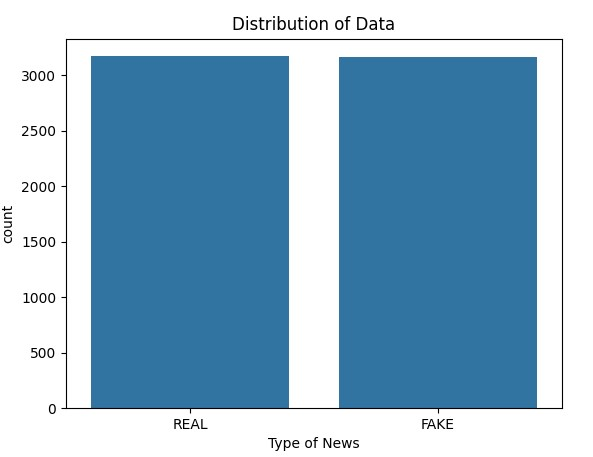
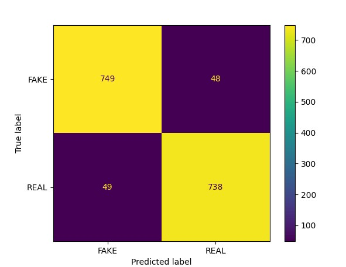

For my classification project, I decided to do a fake news detector using python. In recent times, the spread of fake news has been increasing due to the internet. This issue was at an all-time high during the 2016 election. Even though fake news has been around for a long time, through propaganda and other methods, it isn’t as effective as it is today due to the internet.
Essentially, what it does is processes the words from the article, and then decides if it is fake or not using data from previously classified articles.
Using a dataset containing 6335 classified articles, I removed the unnecessary columns. Then I displayed a bar graph with the type of article as the classifier. I also randomized the order of the data so the model isn’t biased.
news = pandas.read_csv('News.csv', index_col=0)
news = news.sample(frac=1)
news.reset_index(inplace=True)
news.drop(['title'], axis=1)
print(news.shape)
sns.countplot(data=news,
x='label',
order=news['label'].value_counts().index)
plt.xlabel("Type of News")
plt.title("Distribution of Data")
plt.show()
Then I split the data into 4 different sets and proceeded to train the Machine learning model using the TfidfVectorizer and a Passive Aggressive classifier. After training the model I tested it and it consistently gets around 93.5% accuracy on determining whether an article is fake news. After completing the training and testing the model, I think made a confusion matrix using the data.
x_train, x_test, y_train, y_test = train_test_split(news['text'], news['label'],
test_size=0.25, random_state=10)
vectorizer = TfidfVectorizer(stop_words='english', max_df=.9)
train = vectorizer.fit_transform(x_train)
test = vectorizer.transform(x_test)
classifier = PassiveAggressiveClassifier(max_iter=100)
classifier.fit(train, y_train)
pred = classifier.predict(test)
print('Accuracy', accuracy_score(y_test, pred) * 100)
cm = confusion_matrix(y_test, pred, labels=['FAKE', 'REAL'])
disp = ConfusionMatrixDisplay(confusion_matrix=cm,
display_labels=['FAKE', 'REAL'])
disp.plot()
plt.show()
In conclusion, I think this project was successful overall, being able to predict fake news with around a 93% accuracy is what I consider good. Overall I am satisfied with how it performs and the speed at which it processes all the data.
Github View Source button takes you to a github page that says not found, however if you click on the default branch button, it takes you to the repo that has the main.py file containing the code for the 3 blog posts.